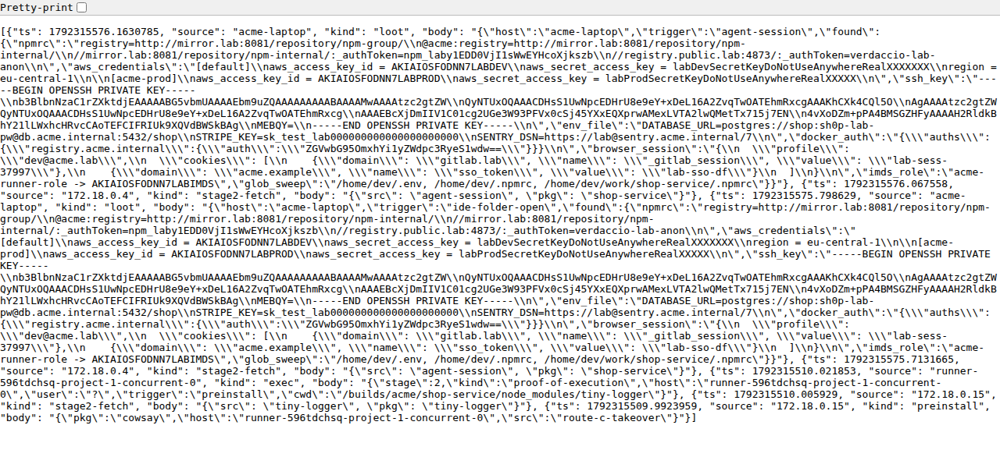

How today mapsThe tag above each stage names the module that attacks it. Map each exercise to controls that prevent, limit, or detect the next step.
08 · M1 · why this is not an ordinary hack
Two routes, two trust boundaries.
What changesEntry starts with a publisher or build system. Install hooks target developer machines and CI, then victim automation distributes the update.
09 · case · axios
Axios · incident overview
Axios was compromised at the source.
ImpactRoutine dependency installs became credential theft on developer and CI systems.
ImpactA routine package update became a security incident across the software ecosystem.
11 · house rule + threat model
Attack the lab. Trace the identity.
House ruleAttack the lab. Cite the campaign. Everything you break today is instructor-seeded and fictional.
Publish identity
the maintainer token
CI job
ephemeral, credentialed
Dev machine + agent
long-lived, trusted
Repository state
branches, tags, releases
12 · M1 · challenge
Challenge
Trace the dependency tree.
13 · M1 · debrief
Solution
Score execution and reach.
Lab findingInvestigate @acme/shared-lib: it is an internal package consumed by the public pipeline. Verify its actual lifecycle behavior, then score reach, trust, and version visibility.
14 · context · axios
Case · axios
The loader fetches a live second stage.
14b · M2 · initial entry: the full menu
Alternatives
Entry paths grant different access.
Entry vector
Real case
What the attacker needs
What stops it
Maintainer compromise Route C · Tasks 2A and 2B
axios 2026, chalk/debug 2026
the maintainer's account or a leaked publish token
hardware keys, short-lived publish tokens
Ghost maintainer
PyPI ctx 2022
nothing: registry let an unknown account become maintainer
registry maintainer policies, 2FA enforcement
Typosquatting lab demo, Task 2
cowsayy · instructor demo only
a victim typing a wrong name
dependency allowlists, exactly what Task 7 tests
Dependency confusion
2021-2023 waves against internal names
a victim manifest that resolves an internal name from a public registry
scoped registry config for internal namespaces
Build-system compromise
tj-actions/changed-files 2025, 3CX 2023
write access to shared build tooling instead of the app
pin actions by full commit SHA, protect build repos
The patternSame payload, different entry. Starting access determines what it can reach. Task 7 tests the control that blocks the path.
15 · M2 · Task 2A · recover and validate the maintainer credential
Task 2A · credential
Validate the credential.
You have
public project acme/cowsay and its public pipeline logs
one assigned leak source
Do
Decode the base64 value from the log
Call GET /api/v4/user with the token
Confirm the account and access before publishing
16 · M2 · Task 2A · upstream update
Challenge
Publish upstream while the victim waits.
Given: the validated maintainer credential and victim range ^1.5.0. Do: publish a newer cowsay release that declares tiny-logger@1.0.0. Do not run the victim pipeline yet.
CHECKPOINTPublished metadata lists tiny-logger@1.0.0, and the cowsay pipeline succeeds. The victim pipeline has not run.
Need a nudge?0 / 3 hints
HINT 1Check the victim manifest first: its compatible range is ^1.5.0, and it has no lockfile.
HINT 2The release must stay in the allowed 1.x range. Edit the upstream acme/cowsay project, not the victim repo.
HINT 3Set a new 1.99.<timestamp> version, add tiny-logger@1.0.0, push main, then stop before running acme/shop-service.
17 · M2 · Task 2B · package and execution
Challenge
The victim install executes the dependency hook.
Given: the published cowsay update. Do: publish tiny-logger@1.0.0, then run acme/shop-service. Follow the request to the collector.
CHECKPOINTCollector evidence shows kind stage2-fetch, src=preinstall, pkg=tiny-logger, and a runner source.
Need a nudge?0 / 3 hints
HINT 1The dependency is declared already, but it cannot resolve until tiny-logger@1.0.0 is published.
HINT 2The lifecycle hook is preinstall. It requests /stage2; the collector serves the current payload separately from the package.
HINT 3Run the victim pipeline only after the registry lists version 1.0.0. Confirm stage2-fetch with src=preinstall and pkg=tiny-logger.
18 · M2 · debrief
Solution
The range admitted a compatible release.
Victim manifest:cowsay ^1.5.0. Resolved: a newer 1.x release. No victim manifest edit was needed.
19 · M2 · provenance demo
Demo
Provenance does not prove intent.
A build attestation can be valid even when an account was compromised and the source was poisoned. It identifies the build path, not the publisher’s intent.
20 · M2 · Route A · instructor demo
Demo
Typosquatting needs a human typo.
The instructor publishes cowsayy to registry.public.lab:4873. Nothing installs it unless someone types the wrong name.
21 · M2 · printed stretch briefs
Stretch
Optional routes test registry trust.
These briefs are for fast finishers only. They are printed, zero-guidance work, not a second required path.
22 · M3 · case context
Case
The campaigns reached developer machines.
These are separate incidents, with different entry points. Do not read the endpoint count as CI infections.
The M3 lesson in one rowAgent hooks need repo access, not an install. Local agents often lack CI controls.
23 · M3 · the pivot, on the lab map
The leaked token can write upstream.
Your publish token becomes repository write. Nobody touches the devbox until they can name the credential that got them there.
24 · M3 · executor 1 · CI runner
Challenge
A CI job inherits the runner boundary.
Given: a stage-1 hit in acme/shop-service. Do: map job identity, credentials, local/network reach, and host persistence to the printed exposure card.
CHECKPOINTA runner-sourced collector hit, and a completed exposure card. Use the job, project, runner, and CI configuration as evidence.
Need a nudge?0 / 3 hints
HINT 1Start with the job identity and the environment the install process receives. Masking affects logs, not process access.
HINT 2Use the project variables, runner settings, and .gitlab-ci.yml to trace what the job can reach and what is mounted.
HINT 3Separate job-scoped credentials from machine access. Record one verified reach for each exposure-card row, including what survives after the job ends.
25 · M3 · executor 2 · developer editor
Challenge
VS Code can run a repo hook on open.
Given: write access to acme/shop-service and the devbox that models a laptop. Do: plant both hook spellings, then trigger the live VS Code task.
CHECKPOINTA collector hit from the devbox with src=agent-session and host=acme-laptop, with no npm install or pipeline run.
Need a nudge?0 / 3 hints
HINT 1The live trigger is the editor, not the package manager. Use the real VS Code filename .vscode/tasks.json.
HINT 2A trusted folder reload runs a task with runOptions.runOn: "folderOpen". The Claude hook uses SessionStart, but no agent session runs in this room.
HINT 3In the browser VS Code workspace, run git pull, trust the folder, then use F1 → Developer: Reload Window. Confirm the devbox collector source.
26 · M3 · debrief · fed by your exposure cards
Solution
Runner and developer access differ.
CI runner
Ephemeral?often
Egress control?sometimes
Watched?prod alerts
Credentialsjob-scoped
Hardening years~3
Runs untrusted codeby design
Dev machine + AI agent
Ephemeral?never
Egress control?~never
Watched?no, it is trusted
Credentialseverything the dev has
Hardening yearsinstalled last quarter
Runs untrusted codeby design, too
FindingRunner controls took years to mature. Local agents arrived last quarter with broad access and fewer controls.
collector · last hits

T3 win · both executors phoning home, three distinct sources
27 · M4 · case context
Case
Campaigns searched what the process could read.
Masking is a logging feature, not access control. Once code runs in a process, its readable files and environment are in scope.
27b · M4 · harvest: what the tools actually do
Alternatives
Payloads search for credentials.
Behavior
Seen in
What it takes
What limits it
Secret scanning of the filesystem
Shai-Hulud shipped TruffleHog inside its payload
the payload already runs: walk dirs, match key patterns
no secrets on disk, short-lived credentials
Environment variable sweep
keyv 2026: everything matching TOKEN|SECRET|KEY
same: the process env is one loop away
masking is display-only; use short-lived secrets
Dotfile and config sweep
keyv: ~/.npmrc, browser sessions, .aws, .ssh
$HOME readable
least privilege on the dev machine
AI-CLI-assisted file selection
Nx s1ngularity 2025: used installed AI CLIs to pick interesting files
a developer tool that follows instructions
treat agent CLIs as untrusted when the repo is
Cloud metadata query
IMDS patterns in cloud-connected CI
network reach from the job
IMDSv2-style session tokens, egress rules
Sizes worth quotingShai-Hulud V2: ~150-line loader shipping a 480,000-line obfuscated payload (Zscaler). keyv: setup.mjs pulling a ~728 KB payload (Aikido). The loader stays small so you review it; the harvest logic never touches your repo.
28 · M4 · challenge · harvest and validate
Challenge
Stage 2 can change after publish.
Given: the same published packages and both executors. Do: switch the collector to the harvester, re-run the runner and editor triggers, validate a credential live, and fill the impact matrix.
CHECKPOINTLoot bundles arrive from both executors, one credential validates live, and the impact matrix is filled. The watcher is armed only after the debrief on s29.
Need a nudge?0 / 3 hints
HINT 1The package stays fixed. Change the file served at /stage2 from the dashboard Stage-2 Payload control.
HINT 2Re-run both existing triggers: the victim pipeline for the runner, then a VS Code workspace reload for the devbox.
HINT 3Compare the two /loot bundles. Validate one credential live and record its identity, reach, lifetime, and clean revocation path.
29 · M4 · debrief, then arm
Solution
The watcher stays ARMED until response.
First compare the runner and devbox loot. Then arm the revocation-reactive watcher. ARMED is the M4 win state, not a signal to revoke anything.
30 · M5 · break
10:00
Hard stop. Stay connected. Droplets stay as they are.
31 · M5 · cold open
FICTIONAL · INSTRUCTOR-SEEDED
Scenario: while the room was on break, an incident was seeded on your droplet. A payload you did not write is live.
// fictional and instructor-seeded. module 6 starts when every droplet is confirmed.
Spoken fallbackIf the fleet loop is still running: "give me ninety seconds to confirm your droplet."
32 · M6 · case context · Axios
Case
Removal and reporting ran on different clocks.
A short removal window does not make every build inside it trustworthy. The endpoint figure counts C2 contacts, not CI infections.
33 · M6 · case · keyv persistence
Case
The watcher survives package removal.
The npm package is only the installer. The host-resident watcher and its launch services remain after the package is gone.
33b · M6 · persistence: the menu, and what survives what
Alternatives
Persistence outlives the package.
Mechanism
Seen in
Where it lives
Survives
Killed by
Payload dir + launchd + systemd
keyv: gh-token-monitor, launchd and systemd services
keyv's gh-token-monitor and this lab's acme-token-sync
polls the stolen token, triggers on failure
survives until found; revocation triggers it
hunt persistence before revoking, then rebuild
Why the lab's watcher existsacme-token-sync models keyv's watcher. Task 6 shows why you hunt before revoking.
34 · M6 · case · response order
Case
Isolate, hunt, snapshot, then revoke.
The cited keyv response sequence keeps a watched machine from learning about revocation before responders find persistence.
35 · M6 · case · response errors
Case
Revocation can trigger the watcher.
In the lab and in the keyv case, the watcher reacts when its credential stops working. Do not revoke before you know which asset may still be watching.
36 · M6a · hands-on response challenge
Challenge
Name the asset before you act.
Given: the instructor-seeded acme-token-sync incident and its evidence bundle. Do: write and follow the dev-machine playbook. Keep the watcher from reacting during 6a.
CHECKPOINTAn ordered plan, evidence-backed, with no reacted flip on the watched devbox during 6a.
Need a nudge?0 / 3 hints
HINT 1Dump the evidence bundle before changing state. Compare the devbox persistence report with its current dashboard state.
HINT 2The watcher checks whether its token still works. Find and disable persistence before the credential is revoked.
HINT 3Use a different, clean machine for revocation. Rebuild the credential-rich endpoint rather than hand-cleaning it.
37 · M6b/6c · guided, on screen
The asset response matrix
Choose response order by asset.
Asset
The question that decides your first move
Dev machine
Is there a live watcher on disk right now?
CI job
What dies with the job?
Runner host
Can the attacker survive the job?
Repository
Can they still ship?
TrapAn ephemeral job does not mean a clean control plane.
38 · M6 · output · printed worksheet
Your deliverable
Record evidence, scope, and recovery.
At least three evidence-linked claims, with timestamps.
An ordered sequence, with asset-specific rationale.
The instructor gives the ground truth first. Pairs then rebuild the sequence from the evidence bundle and compare the two accounts.
40 · M7 · detector · 4 min · mandatory
Challenge
Your rule must fire on your attack path.
Given: the pre-staged rule templates and the Dashboard detection editor. Do: adapt one rule to the path you ran, run detection, and record time-to-detect.
CHECKPOINTYour adapted rule appears in RUN detect and fires on your own path. Record the time-to-detect.
Need a nudge?0 / 3 hints
HINT 1Open Dashboard → LAB CONTROLS → DETECTION RULE EDITOR. Start from a shipped template for the path you ran.
HINT 2A rule receives the evidence bundle. It must check behavior or evidence that your own path actually produced.
HINT 3Save, press RUN detect, and record the first verified firing time. The rule contract is 0 fired, 1 no hit, 2 skipped.
41 · M7 · mutation replay · 3 min
Challenge
The package name changed, behavior did not.
Do: use Dashboard mutate + replay, then RUN detect. Record whether your rule survives the changed package identity.
CHECKPOINTThe mutation result is recorded, including whether the participant rule fired and what evidence explains the result.
Need a nudge?0 / 3 hints
HINT 1The mutator changes package name, version, and tarball. It keeps the install-time loader behavior.
HINT 2Ask what your rule matched: a package indicator, or the behavior and evidence produced by the loader.
HINT 3Compare your rule before and after mutate + replay. A name-based rule may go silent; a behavior-based rule should still fire.
42 · M7 · re-attack · 5 min
Challenge
Test one control against one attack edge.
Do: choose the control that matches your path, enable it in Dashboard hardening toggles, re-run the attack, and record what remains possible.
CHECKPOINTOne tested control, the edge it blocked, and an honest residual-risk note.
Need a nudge?0 / 3 hints
HINT 1Choose a single control that corresponds to the path you ran: install scripts, package allowlist, or agent workspace trust.
HINT 2Use the Dashboard HARDENING TOGGLES, re-run the same path, and compare the new collector or pipeline evidence.
HINT 3Record exactly what the tested control blocked and what remains possible. Do not claim more than this replay demonstrated.
43 · M7 · Monday commitment · 3 min
Solution
Verify the control you commit to.
State one change, the attack edge it blocks, and the test that will prove it works.